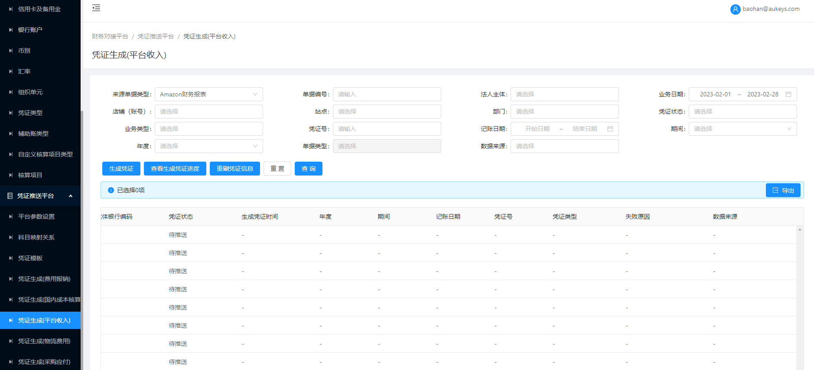

1.字段属性：
1.搜索栏：
新增【来源类型】：下拉多选，无默认值，选项包含列表对应字段值，删重；
2.列表：
新增【来源类型】：位于列表最右侧，字段值与【平台财务报表/Amazon/财务EAS凭证】页面【来源类型】字段值保持一致；
2.按钮控制说明：
【生成凭证】：当【来源单据类型】=“Amazon财务报表”时，点击按钮，新增校验逻辑：所选范围数据若【业务类型】=“转款”且【币种】≠【回款币种】（后台表），则校验【财务费用】字段值是否为空；
2.1为空：对应数据生成凭证失败，【凭证状态】=“凭证生成失败”，【失败原因】展示“跨币种转款未计算财务费用”；
2.2不为空：校验通过，正常生成凭证不做处理；
来源类型：
来源类型